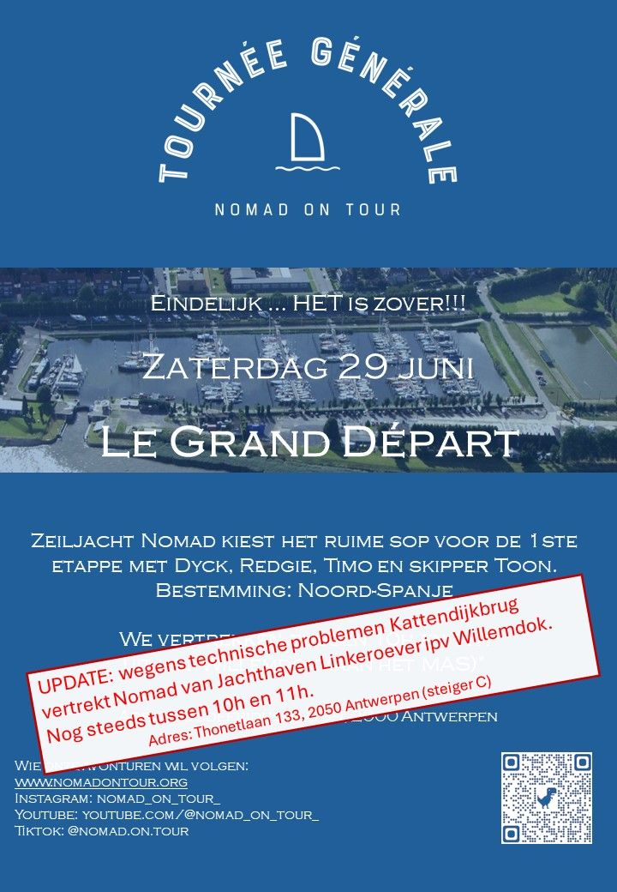
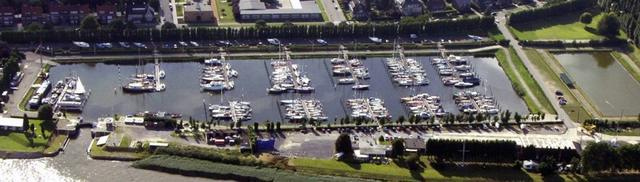

24 juni 2024
All systems go!
Le Grand Départ klinkt misschien wat arrogant, maar zo krijgt de Tour de France - die zaterdag 29/6 ook begint - de kans om wat mee te surfen op onze naambekendheid.
Twee jaar voorbereiding lopen op hun einde. Nomad is al een tijdje in topvorm, de laatste upgrades hebben nog voor de kers op de taart gezorgd 💪.
De skipper zijn topvorm is misschien ooit al beter geweest, maar zijn goesting niet. Van mij mag het nu eindelijk echt beginnen!!
Wie nog een laatste blik op Nomad en haar crew wil werpen voor we de ruige Schelde trotseren is welkom om ons uit te wuiven. Iedereen van harte welkom!
OPGELET: het vertrek is helaas niet zoals eerder aangekondigd aan de jachthaven aan het MAS! Wegens een technisch probleem aan de Kattendijkbrug wijken we uit naar de jachthaven op Linkeroever (naast de Zeescouts waar het Launch Event was; adres = Thonetlaan 133, 2050 Antwerpen, steiger C).
Iets minder fotogeniek, maar het vertrek moeten uitstellen omwille van een kapotte brug is nog net iets onnozeler.

Hoog water om 10h27 dus naar schatting 11h varen we de Schelde op.
Sommigen onder jullie zie ik gelukkig onderweg nog terug, voor de anderen is het tot binnen 14 maanden!! Ciao ciao xxx 👋👋👊